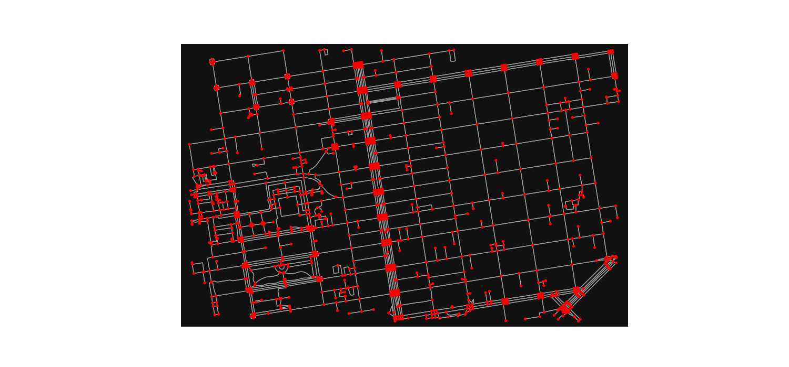

En Kısa Yol Algoritması, Yol Ağı, OSMNX
OpenStreetMap verisi tüm dünya coğrafi verilerini kapsayan açık kaynak, herkesin bilgi ekleyebildiği devasa bir veri deposudur, bedava olarak paylaşılır. İçinde yollar, restoranlar, dükkanlar, önemli yerler gibi pek çok coğrafi bilgileri içerir. Fakat veriyi işlemek bazıları için zor olabilir.
Bu verinin daha rahat işlenmesini sağlayan bir paket OSMNX. Özellikle yol ağ yapısını rahat şekilde indirilmesini ve çizit (graph) olarak doğru şekilde gelmesini sağlıyor. Çizitler bilindiği gibi matematiğin bir dalı, bize düğüm-bağlantı yapılarını işleyen algoritmalar sağlar, tabii ki bir yol ağı çizit teorisinin en bariz uygulama alanıdır, düğümler duraklar, köşe başları vs olabilir bağlantılar onlar arasındaki yollar olacaktır.
OSMNX kullanıcının tanımladığı bölgeler içindeki yol yapısını döndürme kabiliyetine sahiptir, ve bu veriyi diskte önbellekleme yaparak saklayabilir, böylece aynı bölge için sonraki yükleme çağrılarının OSM'e bağlanması gerekmez. Eğer veride çizit yapısına uymayan yerler varsa bunlar döndürülmeden önce tamir edilir.
Kurmak icin Ubuntu uzerinde gdal-bin, libgdal-dev, libspatialindex-dev
apt install ile kurulmali. Sonra pip install
ile scikit-learn ve osmnx.
Örnek olarak [1]'deki yere bakalım,
import matplotlib.pyplot as plt
import osmnx as ox
ox.config(use_cache=True, cache_folder='/tmp/osmnx')
north, south, east, west = 37.79, 37.78, -122.41, -122.43
G = ox.graph_from_bbox(north, south, east, west, network_type="walk")
fig, ax = ox.plot_graph(G, node_color="r",show=False, figsize=(15,7))
plt.savefig('osmnx-01.jpg',quality=50)

cache_folder ile önbellek dosyalarının yazılacağı yer tanımlandı. Üstteki çağrı
için baktık 30 520ecdb05972a5893b8a541266157cd0b30a6381.json diye bir dosya
oraya yazılmış, büyüklüğü 1.8 MB.
graph_from_bbox ile belli kuzey, güney, doğu, batı uç noktalarının
oluşturduğu kutunun içine düşen yol ağını aldık, fakat tek bir nokta
verip ona belli uzaklıktaki tüm yol ağını da alabilirdik, mesela
graph_from_point((37.79, -122.41), dist=750 ile verili noktanın 750
metre çevresindeki ağ alınabilir.
import osmnx as ox
ox.config(use_cache=True, cache_folder='/tmp/osmnx')
G = ox.graph_from_point((37.79, -122.41), dist=750, network_type="walk")
Network tipi network_type ile tanımlanıyor, walk, drive, bike
değerleri geçilebiliyor, bu değerler sırasıyla arabaların geçebildiği, ya da
bisiklet, ya da yürünebilen yol yapılarını döndürür. Uygulamanın
ihtiyacına göre farklı ağ yapıları gerekebilir (arabaların geçebildiği her
yol bisiklete uygun olmayabilir mesela), bu sebeple bu seçenek gerekli.
Çağrı yapıldı, ve artık geri döndürülen G değişkeni içinde yol yapısı var,
buna düğümlerden oluşan bir liste olarak erişilebilir, mesela 0'inci
ve 20'inci düğümler
print (list(G)[0])
print (list(G)[20])
65281835
65295291
İlk 10 düğüm
print (list(G)[:10])
[65281835, 65281838, 65287183, 65287185, 65290169, 65290173, 65290750, 65290756, 65291738, 65291741]
Kısa yol bulmaya gelelim; ilk önce eldeki başlangıç ve bitiş coğrafi kordinatlarına en yakın çizit düğümlerini bulmak lazım,
origin = (37.784825495166544, -122.40208526405367)
destination = (37.79584463577157, -122.40724290129684)
origin_res = ox.get_nearest_node(G, origin,method='euclidean',return_dist=True)
destination_res = ox.get_nearest_node(G, destination,method='euclidean',return_dist=True)
print (origin_res)
print (destination_res)
(5554084244, 5.332404779362496)
(7233579607, 15.949918872077847)
Sonuçlar bir Python tüpü (tuple) olarak verildi, birinci değer düğüm kimliği, ikincisi bizim verdiğimiz kordinata olan metre olarak yakınlık. Şimdi bu ID'ler ile yine OSMNX içinde mevcut olan en kısa yol algoritmasını işletiyoruz,
route = ox.shortest_path(G, origin_res[0], destination_res[0])
route[:10]
Out[1]:
[5554084244,
5554084275,
5554084256,
5554084269,
995847660,
5554084309,
1270745639,
275431510,
5554083274,
1332541752]
Geçilecek yolun ilk 10 düğümü listeledik, en kısa yol bu noktalardan
oluşuyor. Noktalar hakkında daha detaylı bilgiyi G çizit objesinden
alabiliriz, mesela enlem, boylam değerleri bu objeye sorulabiliyor,
ilk noktayı soralım,
G.nodes[route[0]]
Out[1]: {'y': 37.7848105, 'x': -122.4021429, 'street_count': 3}
Tüm noktaları enlem/boylam listesine çevirelim,
coords = [[G.nodes[r]['y'],G.nodes[r]['x']] for r in route]
print (coords)
[[37.7848105, -122.4021429], [37.7845016, -122.4030429], [37.7846474, -122.4031738], [37.7847412, -122.4032112], [37.784882, -122.403207], [37.7850366, -122.4034089], [37.7850702, -122.4034505], [37.7851231, -122.4035159], [37.7851702, -122.4035743], [37.7855328, -122.40403], [37.7862746, -122.4049529], [37.7864463, -122.404735], [37.7865865, -122.4048136], [37.7867459, -122.4048752], [37.7868265, -122.4049267], [37.7868355, -122.4048551], [37.7869147, -122.404873], [37.7877685, -122.4050568], [37.788237, -122.4051523], [37.7887033, -122.4052473], [37.7891462, -122.4053364], [37.7892111, -122.4053494], [37.7893261, -122.4053725], [37.7896352, -122.4054347], [37.7901017, -122.4055285], [37.7905698, -122.4055991], [37.7915047, -122.4057597], [37.7917761, -122.4058148], [37.7923696, -122.4059355], [37.7924582, -122.4059535], [37.7925624, -122.4059745], [37.7933866, -122.4061403], [37.793828, -122.4062291], [37.7942666, -122.4063174], [37.7950988, -122.4064848], [37.7951483, -122.4064948], [37.7952034, -122.4065059], [37.7959786, -122.4066619], [37.7959709, -122.4067263], [37.7959246, -122.4070922]]
Kordinatları bir Folium haritasında gösterebiliriz artık,
import folium
map = folium.Map(location=origin,zoom_start=16,control_scale=True)
folium.Marker(origin, popup="Park").add_to(map)
folium.Marker(destination, popup="Çin Mahallesi").add_to(map)
folium.PolyLine(locations=coords, color="red").add_to(map)
map.save('direction1.html')
Haritada görülen kırmızı çizgiler yürünüş için en kısa yolu gösteriyor.
Ham OSM Dosyaları, Format Değişimi
Eger bir OSM dosyasini indirip direk kendi yerel diskimizden okutmak istiyorsak
graph_from_xml cagrisi var. [7]'den mesela ufak bir dosya Seychelles indirelim,
.osm.bz2 dosyasi
import osmnx as ox
G = ox.graph_from_xml("seychelles-latest.osm.bz2")
ile okuyabiliriz. Eğer bu çiziti başka bir formatta yazmak istiyorsak, mesela her satır "düğüm1 - düğüm2 - değerler" olacak şekilde, yani 1'inci düğümün bağlı olduğu 2'inci düğüm ve aralarındaki kenar ağırlığı her satıra yazılacak, bunu
import networkx as nx
nx.write_edgelist(G, "test.edgelist.gz",data=["oneway","length"])
ile yapabiliriz. Her düğümün coğrafi kordinatını .osm dosyasını direk
tarayarak yapabiliriz, okunabilir bir dosya bu, ve lat, lon değerleri
her düğüm için var.
Dezavantajlar
Bu paketin hafıza idare problemi var. Eğer .osm dosyası çok büyük ise
graph_from_xml için yerel bilgisayarın hafızası yetmeyebilir, mesela
Lüksemburg gibi ufak bir harita için bile 4 GB yeterli olmadı.
Bölge tanımlayıp o bölge için gerekli OSM bilgilerini indirmek, aynı anda onu işleyip başka bir formata döndürmek teoride iyi fakat pratikte network yavaşlığı, kesilmesi gibi envai türden problemde bizi yolda bırakabilir. Bazı kavramları öğrenmek için bu paket faydalı olsa da nihai bir uygulama için eksikler olacaktır.
Kaynaklar
[1] Geoff Boeing
[2] OSRM Yol Tarifi
[4] OSMNX Belge 1
[5] OSMNX Belge 2
[6] OSMNX Belge 3
[7] http://download.geofabrik.de
Yukarı